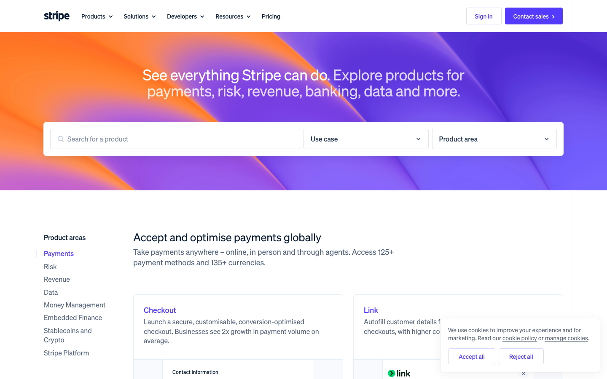

Colour — live swatches
Click any swatch to copy its value; roles are listed before raw primitives.
Semantic roles
Primitives
Typography — real sizes and weights
| Token | Value | Specimen | Status |
|---|---|---|---|
| type/hero | 48px | 337,527,796 Aa BNB | observed |
| type/h2 | 32px | 337,527,796 Aa BNB | observed |
| type/h3 | 26px | 337,527,796 Aa BNB | observed |
| type/body | 16px | 337,527,796 Aa BNB | observed |
| type/ui | 15px | 337,527,796 Aa BNB | observed |
| type/caption | 10px | 337,527,796 Aa BNB | observed |
Weights
| Token | Value | Specimen |
|---|---|---|
| weight/light | 300 | Hierarchy weight |
| weight/regular | 400 | Hierarchy weight |
| weight/ui-strong | 500 | Hierarchy weight |
Radius & depth
Shadows
Motion replay
Each row replays the actual duration token with the system's easing. Reduced motion is respected.
| Duration | Value | Specimen | |
|---|---|---|---|
| motion/fast | 240ms | ||
| motion/base | 300ms | ||
| motion/reveal | 400ms |
Easings observed
- motion/easing-in-out · cubic-bezier(0.45, 0.05, 0.55, 0.95)
- motion/easing-out · cubic-bezier(0.25, 1, 0.5, 1)
Taste DNA
Colour is a once-per-page event
a single decorative gradient confined to the hero
gradient text, gradient buttons, and gradient section backgrounds (the common fintech treatment)
Why Readers need to trust the screenshots more than the scenery; once colour stops, the product becomes the subject.
One indigo, only where you can click
indigo restricted to actions and links
indigo section backgrounds, indigo icons, and indigo headings
Why At ~0.2% of the surface, indigo always means 'do something'; a larger share would make the page a brand poster and slow scanning.
Light weights carry the headline
variable 300 at every display size
600-700 headline weights with a 1.33x type ramp
Why A light face over a heavy gradient leaves the gradient as the loudest thing; bold type would fight the artwork and the screenshots.
Blue-black ink instead of grey
blue-tinted neutrals
pure greys (#111, #666) or neutral-warm text
Why Grey text on a white page beside indigo reads as unfinished; shared hue makes the colour look chosen rather than added.
Motion is tiered by job
three job-specific durations
one global 200ms ease on everything
Why Colour has to feel immediate on hover while a layout reveal needs room to read; one duration would make one of them wrong.
Source record
Screenshots below are the captured source pages, shown for comparison — they are not rebuilt by lewitt.




Pages inspected
- https://stripe.com/
- https://stripe.com/pricing
- https://stripe.com/products
- https://stripe.com/contact/sales
Limitations
- stripe.com redirects to /en-sg on this network; copy and pricing are the SG locale.
- The hero gradient is an image (1392x975); its colours are sampled from pixels, not CSS.
- Rendered font is sohne-var; the loaded face filename was not inspected.
- Home page CSSOM scan found no :focus-visible/reduced-motion, while the pricing page did — scanning is per-page.
- contact/sales (page 4) is a short form page and contributes little signal.
Every token
| CSS var | Token | Layer | Type | Value |
|---|---|---|---|---|
| --lw-ink-900 | color/ink/900 | primitive | color | #061B31 |
| --lw-ink-700 | color/ink/700 | primitive | color | #50617A |
| --lw-ink-600 | color/ink/600 | primitive | color | #64748D |
| --lw-tint-100 | color/blue-tint/100 | primitive | color | #E5EDF5 |
| --lw-tint-50 | color/blue-tint/50 | primitive | color | #F8FAFD |
| --lw-page-tint | color/blue-tint/25 | primitive | color | #F6F9FC |
| --lw-white | color/white | primitive | color | #FFFFFF |
| --lw-indigo-600 | color/indigo/600 | primitive | color | #533AFD |
| --lw-indigo-500 | color/indigo/500 | primitive | color | #635BFF |
| --lw-canvas | color/canvas | semantic | color | #FFFFFF |
| --lw-canvas-tint | color/canvas-tint | semantic | color | #F6F9FC |
| --lw-surface-subtle | color/surface-subtle | semantic | color | #F8FAFD |
| --lw-text-heading | color/text/heading | semantic | color | #061B31 |
| --lw-text-body | color/text/body | semantic | color | #50617A |
| --lw-text-muted | color/text/muted | semantic | color | #64748D |
| --lw-action-bg | color/action/bg | semantic | color | #533AFD |
| --lw-action-bg-alt | color/action/bg-alt | semantic | color | #635BFF |
| --lw-action-fg | color/action/fg | semantic | color | #FFFFFF |
| --lw-link | color/link | semantic | color | #533AFD |
| --lw-font-sans | font/sans | primitive | fontFamily | 'sohne-var', -apple-system, system-ui, 'Segoe UI', sans-serif |
| --lw-font-mono | font/mono | primitive | fontFamily | 'SourceCodePro', ui-monospace, SFMono-Regular, monospace |
| --lw-font-body | font/body | semantic | fontFamily | 'sohne-var', -apple-system, system-ui, 'Segoe UI', sans-serif |
| --lw-font-code | font/code | semantic | fontFamily | 'SourceCodePro', ui-monospace, SFMono-Regular, monospace |
| --lw-type-hero | type/hero | component | dimension | 48px |
| --lw-type-h2 | type/h2 | component | dimension | 32px |
| --lw-type-h3 | type/h3 | component | dimension | 26px |
| --lw-type-body | type/body | component | dimension | 16px |
| --lw-type-ui | type/ui | component | dimension | 15px |
| --lw-type-caption | type/caption | component | dimension | 10px |
| --lw-tracking-hero | tracking/hero | component | dimension | -0.02em |
| --lw-tracking-h2 | tracking/h2 | component | dimension | -0.015em |
| --lw-leading-prose | leading/prose | component | number | 1.2 |
| --lw-weight-light | weight/light | primitive | fontWeight | 300 |
| --lw-weight-regular | weight/regular | primitive | fontWeight | 400 |
| --lw-weight-ui-strong | weight/ui-strong | primitive | fontWeight | 500 |
| --lw-radius-control | radius/control | semantic | dimension | 4px |
| --lw-radius-control-alt | radius/control-alt | semantic | dimension | 6px |
| --lw-radius-card | radius/card | semantic | dimension | 16.5px |
| --lw-depth-float | depth/float | component | shadow | 0 16px 32px rgba(50, 50, 93, 0.12) |
| --lw-depth-float-strong | depth/float-strong | component | shadow | 0 13px 27px -5px rgba(50, 50, 93, 0.25), 0 8px 16px -8px rgba(0, 0, 0, 0.3) |
| --lw-depth-ring | depth/ring | component | shadow | 0 0 0 1px #533AFD |
| --lw-depth-ring-inset | depth/ring-inset | component | shadow | inset 0 0 0 2px #FFFFFF |
| --lw-motion-fast | motion/fast | primitive | duration | 240ms |
| --lw-motion-base | motion/base | primitive | duration | 300ms |
| --lw-motion-reveal | motion/reveal | primitive | duration | 400ms |
| --lw-easing-in-out | motion/easing-in-out | primitive | easing | cubic-bezier(0.45, 0.05, 0.55, 0.95) |
| --lw-easing-out | motion/easing-out | primitive | easing | cubic-bezier(0.25, 1, 0.5, 1) |
| --lw-space-section | space/section | component | dimension | 128px |
| --lw-layout-container | layout/container | component | dimension | 1080px |